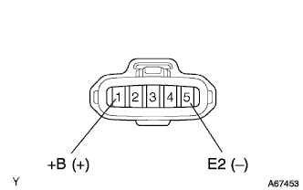
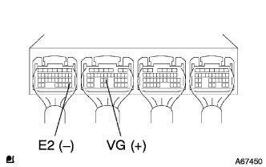
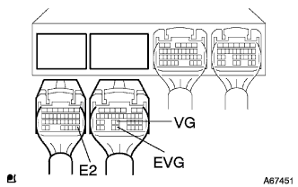
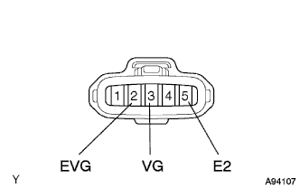

DTC P0100/31 エアフロメータ系統 |
| DTC No. | DTC検出条件
| 点検部位 |
| P0100/31 |
|
|
| 吸入空気量(g/s) | 不具合内容 |
| 約0.0 |
|
| 170.1以上 |
|
| 手順1 | TaSCANデータ読み取り（吸入空気量） |
イグニッションスイッチをONにして、エンジン停止状態でTaSCANに表示される吸入空気量を読み取る。
| A | B | C | |
| 吸入空気量(g/s) | 0.0 | 170.1以上 | 1.6-170.0 |
|
| ||||
|
| ||||
| A | |
| 手順2 | ワイヤハーネスまたはコネクター点検（インテークエアフロメータS/A電源電圧点検） |
|  |
インテークエアフロメータのコネクタを切り離す。
イグニッションスイッチをONにする。
トヨタエレクトリカルテスターを使用して、インテークエアフロメータの車両側コネクタの端子間の電圧を測定する。
| 測定端子(端子名) | 基準値 |
| 1(+B)←→5(E2) | 9-14V |
|
| ||||
| OK | |
| 手順3 | エンジンコントロールコンピユータ単体点検 |
|  |
エンジンを始動する。
トヨタエレクトリカルテスターを使用して、アイドリング時のエンジンコントロールコンピユータ端子間の電圧を測定する。(端子配列は参照)
| 測定端子(端子名) | 基準値 |
| B24(VG)←→A28(E2) | 0.5-3V |
|
| ||||
| NG | |
| 手順4 | ワイヤハーネスまたはコネクター点検（エンジンコントロールコンピユータ-インテークエアフロメータS/A） |
|  |
エンジンコントロールコンピユータのコネクタA、Bおよびインテークエアフロメータのコネクタを切り離す。
|  |
トヨタエレクトリカルテスターを使用して、エンジンコントロールコンピユータ←→インテークエアフロメータ間の導通および短絡を点検する(端子配列は参照)。
| 測定端子(端子名) エンジンコントロールコンピユータ←→エアフロメータ | 基準 |
| B24(VG)←→3(VG) | 導通があり他の端子間およびボデーアース間と短絡がないこと |
| B32(EVG)←→2(EVG) | 導通があり他の端子間およびボデーアース間と短絡がないこと |
| A28(E2)←→5(E2) | 導通があり他の端子間およびボデーアース間と短絡がないこと |
|
| ||||
| OK | ||
| ||